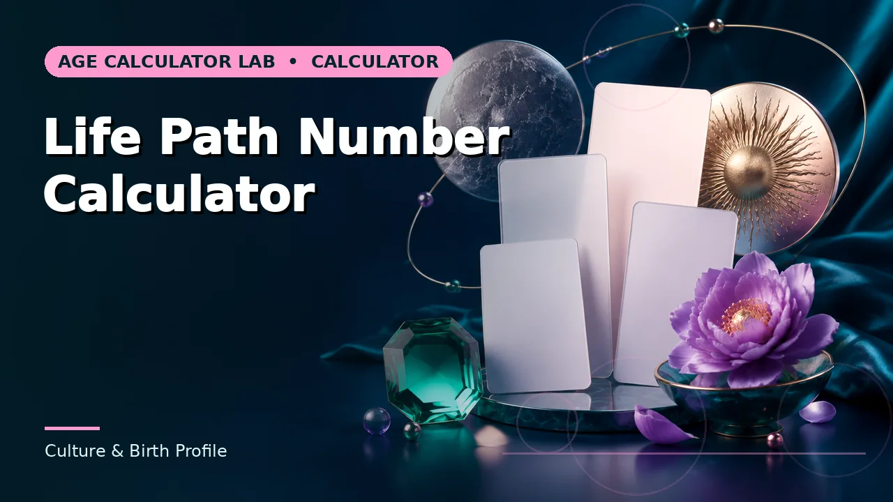

Quick answer
Different reduction methods give different answers for the same date. State which method you used, and treat the result as a reflective tradition rather than a measurement.
The basic method
Write out the full birth date and add all the digits. Keep reducing until you reach a single digit, except that 11, 22 and 33 are usually preserved as master numbers rather than reduced further.
For 18 November 1994: 1+8+1+1+1+9+9+4 = 34, and 3+4 = 7. That is the life path number under the straightforward all-digits method.
Use this guide with the right tool: Open the Life Path Number Calculator for a recreational numerology life-path number from a birth date. If the question shifts, compare it with the Birthday Number Calculator or the Birth Year From Age Calculator.
Where practitioners diverge
Some reduce each component separately first — day, month and year each to a single digit or master number — then add those and reduce again. That can produce a different final number, particularly where a master number appears at an intermediate stage and is preserved under one method and lost under the other.
Neither approach is more traditional than the other in any way that settles the matter. The relevant point for anyone using it is that a life path number is not fully specified without the method, and two sources can legitimately give different answers for the same date.
Master numbers
11, 22 and 33 are treated as significant and left unreduced in most modern systems. Some practitioners preserve them only at the final step; others preserve them at every intermediate stage, which changes results.
Some traditions include 44 as well. As with the reduction method, this is a choice made by a school of practice rather than a fact to be discovered.
What it is
Numerology is a tradition of symbolic interpretation with roots in Pythagorean thought and a long history in several cultures. Its modern popular form dates largely from the early twentieth century.
It has no evidential basis as a predictive or diagnostic system, and the calculator here presents it as a recreational and reflective tool. People find value in that kind of framework for thinking about themselves, and there is nothing wrong with using it as such — provided it is not mistaken for evidence about anything.
Worked example
Work through it with your own dates and the difference will usually be obvious. If it is not, the convention in use is the first thing to check.
Common mistakes to avoid
- Mixing reduction methods. All-digits and component-first can give different answers. Pick one and state it.
- Dropping master numbers inconsistently. Decide whether 11, 22 and 33 are preserved at intermediate steps and apply it throughout.
- Presenting numerology as evidence. It is a symbolic tradition, useful for reflection. It is not diagnostic or predictive.
Use the right calculator
The tools below apply this method directly. Where a result depends on a convention, the page says which one it used.



Frequently asked questions
Which method does this calculator use?
Digit reduction across the full date, preserving 11, 22 and 33 as master numbers.
Why does another site give a different number?
Almost certainly a different reduction method or a different treatment of master numbers. Neither is authoritative.
Does the date format matter?
No. The digits are the same whichever order they are written in, since addition is commutative.